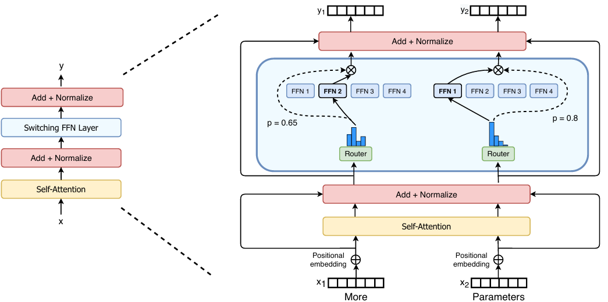
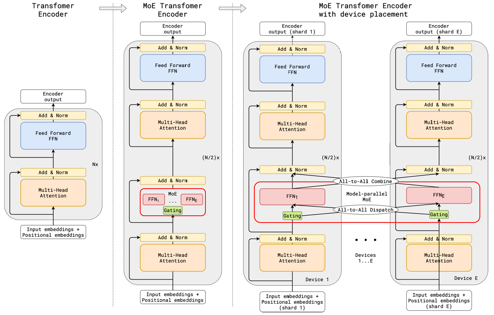
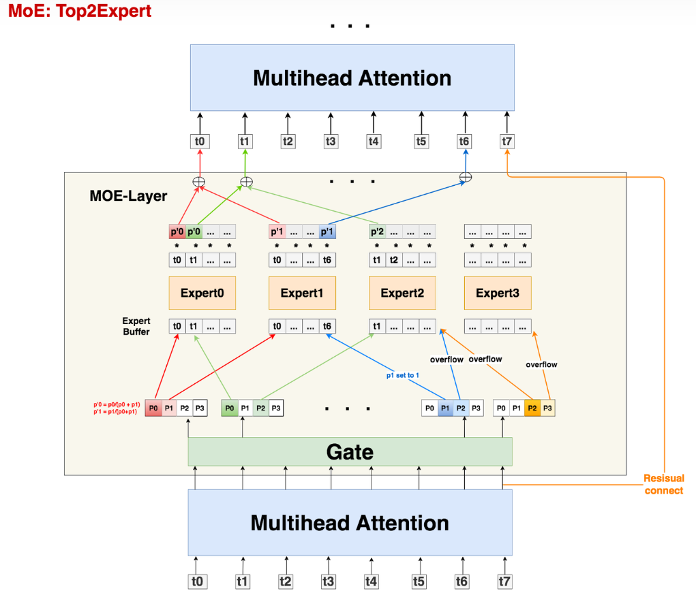

大模型系列(三)- MoE:混合专家模型
DeepSeed提出的Moe原论文：2006.16668
参考:图解大模型训练系列之：DeepSpeed-Megatron MoE并行训练（原理篇） - 知乎
大模型系列(三)- MoE:混合专家模型
1. 什么是MoE
MoE(Mixers of Experts)混合专家模型的理念起源于1991年的论文**Adaptive Mixture of Local Experts**。这里不做介绍，仅讨论现代LLM中的MoE.


1.1 MoE原理
原理:将输入通过门控Gate分配给适合处理这类输入的"专家"Experts，而不是把输入交给所有的"专家"Experts进行处理。通过这种方式减小计算量，在有限的计算资源预算下，用更少的训练步数训练一个更大的模型。(只是简单概述，细节后面会讨论)。
优势:
- 与稠密模型相比， 预训练速度更快
- 与具有相同参数数量的模型相比，具有更快的推理速度
缺点:
- 需要大量显存，因为所有专家系统都需要加载到内存中
- 在 微调方面存在诸多挑战，但 近期的研究 表明，对混合专家模型进行 指令调优具有很大的潜力。
1.2 MoE层架构
MoE Layer其实就是将传统 Transformer 模型中的前馈网络 (FFN) 层替换为了MoE-layer，其中每个MoE-Layer由一个gate(router)和若干个experts组成。这些gate和experts通常是前馈网络 (FFN)，但它们也可以是更复杂的网络结构，甚至可以是 MoE 层本身，从而形成层级式的 MoE 结构。
- gate：决定把哪个token送去哪个expert，可以训练
- expert：假设一个有n个token的batch，原始的Transformer把这n个token送去一个FFN层做处理，而在MoE中则是将token给合适的experts处理。例如"我喜欢你"包括主谓宾三个部分，每个部分可以交由一个expert处理。
注意：
MoE-layer也被称为稀疏层，因为每个token只需要经过相应的expert而不是全部的expert，使得模型在扩大规模时计算量是非线性增加的。FFN层则就是稠密层
expert不是对FFN的平均切分，实际上任意指定每个expert的大小，每个expert甚至可以大于等于原来单个FFN层。因为如果将FFN平分为experts，token只经过一部分的experts，计算量也小于FFN。
2. 以Gshard为例的MoE框架流程设计

2.1 初步过程
以batch_size = 1为例：
1.首先，所有tokens正常过Attention层得到MoE-layer的输入，记输入MoE-layer数据的尺寸为(S, M)
- S : 输入batch中的token数量，例如图中S=8
- M: token_embedding维度
2.之后，attention之后的token通过线形层Gate判断应该被送去哪个expert。Gate的尺寸大小为(M, E)
- E : expert的数量
3.输入数据(S, M)过Gate(M, E)后，得到prob数据(S, E)，prob的含义是：每个token去向每个expert的概率。例如对于第一个token t0来说，经过attention和gate之后输出上图中最左侧的[P0,P1,P2,P3],代表去向四个不同experts的概率。
4.在Gshard中使用的是top2Expert，因此对每个token，只关心它概率最大的两个expert。
2.2 溢出处理
expert负载不均现象:一些expert接收到了过多token，而某些expert接收的token过少。这种现象不符合MoE设计的初衷，也影响了计算效率（例如引起分布式训练中各卡通讯时的负载不均）。
Gshard就提出了以下几种解决办法：
1.capacity和capacity factor
每个expert设置一个容量值（capacity），如果当前这个expert接收到的token数已经超过了容量，那么它就不再接收token了，此时我们称这个多出来的token为溢出(overflow)
以图为例，一共有8个token和4个expert，在理想的负载均衡的情况下，每个expert应该接收8/4 = 2个token，考虑到这里采用的是top2Expert，因此最终每个expert接收的token上限最好是(8/4)*2 = 4，也就是图中expert buffer的长度
容量值的选择不一定非要是，可以根据需要让每个expert多处理或少处理一些token，还可以设置一个容量下界(min_capacity)
2.Random Routing
以图为例，可以看到t6选择的第二个expert已经没有位置了；而t7选择的两个expert都满了，这就发生了所谓的溢出现象。
对于一个token，我们一定要把它发到top2Expert上吗？
在Gshard论文提出了一种方法：以图中t0为例，概率最大的expert它是必定要发去的，但在选择第二个expert时，它对产出的每个logit也就是概率加上了一些噪声（从某种分布中采样4个噪声，加在这4个logit上），在mask掉原先概率最大的logit（未加噪声之前第一个选择的expert所对应的那个logit），再从剩下3个加了噪声的logit中找到最大的作为其2nd Expert。
在这样选出两expert之后，选择其加噪声之前的概率logit并分配权重（假设第一个选择的expert为Expert0，且未加噪声的logit为；第二个选择的expert为Expert1，且未加噪声的logit为）：
是一种权重（weight），该token过expert0和expert1后会分别得到一个输出token，我们可以对2个输出token做加权计算，得到最终的输出token。
在这种方法的基础上的溢出处理方法：
- 对于单个expert溢出的情况:那么就把另一个expert的权重值为1，然后正常参与加权计算（如图中t6）
- 对于2个expert都溢出的情:那么该token就不经过任何expert，直接通过残差连接的方式，原样发去下一层的Attention上（如图中t7）
3.Auxiliary Loss
Auxiliary Loss即辅助损失函数，其也是Gshard尽量保证Expert的负载均衡的方法之一：
- ：expert数量
- ：某个expert的buffer中已经存下的token数量（一般指该expert作为第一个选择的expert时接收到的token数）
- ：总token数量
- ：某个expert的buffer中已经存下的token在该expert上的avg(weight)（考虑范围也是那些将该expert作为第一个选择的expert的token）
最小化这个辅助损失就是使得所有expert上的权重均衡
之所以引入项，是为了让辅助损失函数可以bwd求导（因为只考虑这项，它受制于argmax，是不可求导的
总结下：
- 首先，我们有一串过Attention层后的token序列
- 我们通过Gate，计算每个token去往每个expert的概率
- 我们希望不同expert处理的token数尽量均衡，所以我们同时采取三方面优化：
- Capacity: 为每个expert设置capacity（expert buffer），限制它能处理的最大token数量，多出来的token算为溢出，在top2Expert都溢出的情况下，该token会被直接发去下一层attention。
- Random Routing: 每个token一定会被发去1st Expert，在此基础上我们通过random routing加噪的方式，重新选出2nd expert。在做完capacity + random routing后，我们最终确认了每个token要发去的top2expert和其对应的权重，通过加权计算的方式，确认Moe-Layer最终的输出结果。
- Auxiliary Loss：添加辅助损失函数，对expert负载不均的情况做进一步惩罚。
2.3 Zero Padding和Drop tokens
Zero padding：
上述的优化方法，只能**“缓解”负载不均**，而不能保证解决负载不均。也就是说它并没有解决一些Expert的Expert buffer没有填满的问题。
最直接的方法，就是在没有buffer中空出来的位置，用0向量填充，我们称为Zero padding。更具体地说，最终每个expert上的输入数据维度为
(E, C, M)，其中C表示capacity。0填充的好处是，我们保证每个expert上要处理的输入数据维度是一样的，这有利于硬件层面的后续处理。
Drop tokens：
当发生溢出情况时，不是所有token都会被expert正常处理的，我们称这种对溢出token的操作为drop tokens。如果被drop掉的tokens数量太多，会造成信息损失，因为它们没有被expert处理。虽然可以通过调整capacity来缓解这个问题，但是过大的capacity会引起更严重的zero padding问题（影响到矩阵的稀疏程度），同时会导致计算量的增大，这也是后续一些MoE模型架构侧重的优化。
2.4 伪代码
1 | # ------------------------------------------------------------------------------------- |
（1）enisum的作用
- enisum在这里泛指我们自定义的某几种矩阵计算方式，enisum中诸如
"SEC, SM -> ECM"只是用来表示输入数据和输出数据的维度，并不表示两个输入矩阵就一定是按照SEC和SM这样的尺寸直接相乘（我们肯定要对输入数据做些例如unsqeeze()，reshape()之类的操作才能把它们正确乘起来，得到想要的结果）。 - enisum使得我们在矩阵计算的同时，能维持token和expert的顺序。你可能在阅读伪代码的过程中已经感受到，维持“顺序”是一件很重要的事，例如token在专家buffer中的顺序，各个专家间的排序等。为什么维持顺序很重要呢？因为一个batch里有很多token，我们将其发往不同的expert做计算后，输出结果的顺序肯定是打乱的，所以需要通过一种方式追踪顺序，把token permute回正常的位置再输入下一层Attention。在这里我们通过自定义的矩阵计算方式，巧妙维护住这种顺序，这样我们就不需要额外建索引表之类的来查找了。
（2）将输入数据按照expert的顺序排好
可以特别关注下伪代码步骤3中的操作，这个操作将有利于后续专家并行组之间的通讯。
3. MoE并行训练
这一部分的内容要在理解如下内容的前提下进行: